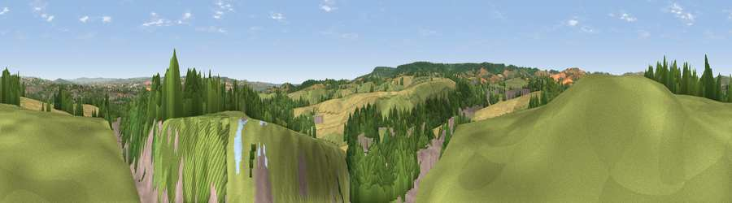

Viewpoint near Exminster
#13254 in England · top 22% of its area beats it · near ExminsterThe view, rendered

A 360° render of this exact spot computed from the terrain model, tree cover and land cover — summer colours, afternoon light, calibrated against photographs of famous viewpoints. Real trees, hedges and buildings will differ in detail.
The panorama
Grey silhouette: terrain skyline in each direction (720 bearings, Earth curvature and refraction included). Dashed green: skyline with trees (+15 m) and buildings (+8 m) as obstacles. Blue strip: how far the ground is visible on each bearing.
Where the view opens
Wedge length = distance to the farthest visible ground on that bearing (vegetation-aware). Rings at 10, 25 and 50 km.
What fills the view
37% woodland · 33% grassland · 16% cropland · 13% built-up ·
Angular shares of the visible panorama (visual magnitude), not map area. Landscape diversity 0.58 (0–1 Shannon).
Key numbers
More beautiful places nearby
The staircase of upgrades: each row has a higher view potential than everything closer. Driving times are estimates from straight-line distance, calibrated against real road routing — check an actual route before setting out.
| Place | Direction | Drive | Score |
|---|---|---|---|
| Viewpoint near Kennford | SW · 2 km | ~5 min | 62.5 |
| Viewpoint near Kenn | SSW · 5 km | ~10 min | 80.0 |
| Viewpoint near Kenton | S · 7 km | ~14 min | 80.7 |
| Viewpoint near Kenton | S · 7 km | ~15 min | 82.9 |
| Viewpoint near Holcombe | S · 13 km | ~24 min | 83.3 |
| Viewpoint near Shaldon | S · 17 km | ~30 min | 83.8 |
| High Peak | E · 17 km | ~30 min | 85.3 |
| Golden Cap | E · 48 km | ~68 min | 88.7 |
50.68204, -3.51413 · source: screening · position refined by local search. Computed location — check access rights before visiting.